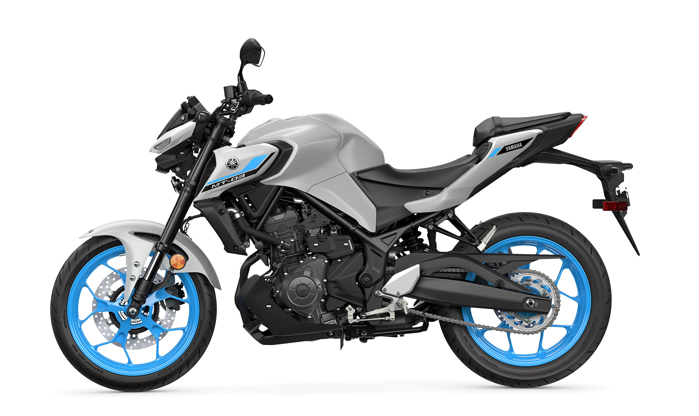

Yamaha MT-03 Vale a Pena em 2026?

Visão Geral da Yamaha MT-03 2026
A Yamaha MT-03 é uma das motos naked mais desejadas da categoria até 400cc no Brasil. Com visual agressivo, motor bicilíndrico e proposta esportiva urbana, muitos motociclistas se perguntam: Yamaha MT-03 vale a pena em 2026?
O modelo é equipado com motor de 321cc, dois cilindros, refrigeração líquida e cerca de 42 cv de potência. Isso coloca a MT-03 como uma das motos mais fortes da categoria de entrada esportiva.
Preço da Yamaha MT-03 em 2026
O preço sugerido da Yamaha MT-03 2026 gira em torno de R$ 32.990 (sem frete). Dependendo da região, pode ultrapassar R$ 34.500 com taxas.
No mercado de usadas, modelos entre 2021 e 2024 variam de R$ 23.000 a R$ 30.000. A desvalorização é moderada, mas a moto mantém bom valor de revenda por ser bastante procurada.
Desempenho e Pilotagem
Se o objetivo é desempenho, a Yamaha MT-03 vale a pena. O motor entrega aceleração forte, ultrapassagens seguras e velocidade máxima próxima de 180 km/h.
O câmbio de 6 marchas é preciso e o conjunto ciclístico oferece estabilidade em curvas. A posição de pilotagem é levemente inclinada, dando sensação esportiva, mas ainda confortável para uso urbano.
Consumo e Manutenção
O consumo médio da MT-03 fica entre 20 e 25 km/l, dependendo do estilo de pilotagem. Não é uma moto focada em economia extrema, mas está dentro do esperado para uma 321cc bicilíndrica.
Revisões periódicas custam entre R$ 300 e R$ 600. O custo anual médio pode variar entre R$ 2.500 e R$ 4.000, considerando manutenção, pneus e seguro.
Pontos Positivos e Negativos
- Prós: Potência elevada, design agressivo, freios ABS, estabilidade.
- Contras: Consumo maior que 150cc, seguro mais caro, banco firme para viagens longas.
Comparação com Concorrentes
Comparando com modelos como Kawasaki Z400 e Honda CB 300F, a MT-03 se destaca pelo motor mais potente da categoria até 300cc.
Para quem busca emoção e desempenho urbano, a Yamaha MT-03 vale a pena mais do que modelos de menor cilindrada.
Conclusão: Yamaha MT-03 Vale a Pena?
Sim, a Yamaha MT-03 vale a pena em 2026 para quem deseja uma moto esportiva urbana com forte desempenho. Não é a opção mais econômica, mas entrega potência, estilo e diversão na pilotagem.
Se o foco for economia e trabalho diário, talvez uma 150cc seja mais racional. Porém, para quem quer subir de categoria e ter mais emoção, a MT-03 é uma excelente escolha.